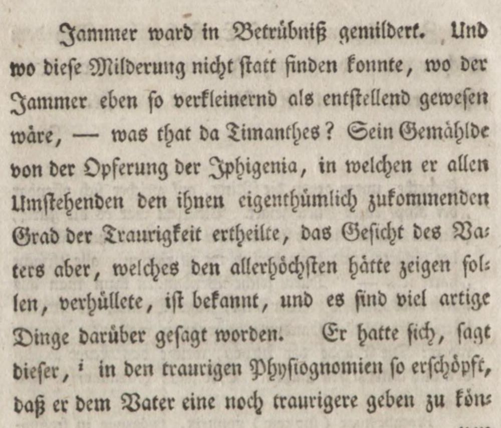
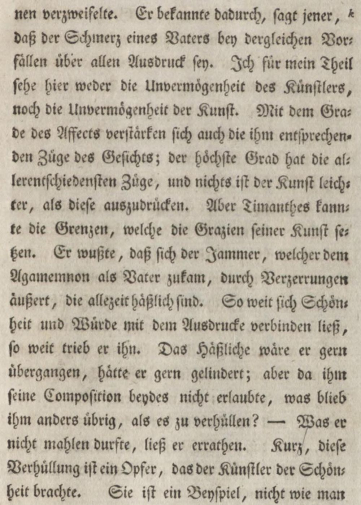

Timanthes’ veil (ch. II, pp. 18–19)
German: Laokoon, ch. II, first edition (1766), pp. 18–19, scan n27–n28. Lessing’s footnote on p. 18 quotes Pliny, Natural History XXXV, 35; his note letters are omitted. Highlighted: the argument Lecky reports.


Wailing was softened into sorrow. And where this softening could not take place, where wailing would have been as belittling as it was disfiguring, what did Timanthes do then? His painting of the sacrifice of Iphigenia, in which he gave every bystander the degree of sadness proper to him, but veiled the face of the father, which should have shown the very highest, is well known, and many pretty things have been said about it. He had, says one, so exhausted himself on sorrowful faces that he despaired of giving the father a sadder one still. He confessed by it, says another, that a father’s grief in such events is beyond all expression. I for my part see here neither the incapacity of the artist nor the incapacity of art. With the degree of the passion the corresponding features of the face grow stronger; the highest degree has the most decided features of all, and nothing is easier for art than to express them. But Timanthes knew the limits which the Graces set to his art. He knew that the anguish proper to Agamemnon as a father expresses itself in distortions which are always ugly. As far as beauty and dignity could be joined with expression, so far he carried it. The ugly he would gladly have passed over, gladly have softened; but since his composition allowed him neither, what was left to him but to veil it? What he might not paint, he left to be guessed. In short, this veiling is a sacrifice that the artist made to beauty.
Translation: this edition’s draft.
Original German
Jammer ward in Betrübniß gemildert. Und wo diese Milderung nicht statt finden konnte, wo der Jammer eben so verkleinernd als entstellend gewesen wäre, — was that da Timanthes? Sein Gemählde von der Opferung der Iphigenia, in welchen er allen Umstehenden den ihnen eigenthümlich zukommenden Grad der Traurigkeit ertheilte, das Gesicht des Vaters aber, welches den allerhöchsten hätte zeigen sollen, verhüllete, ist bekannt, und es sind viel artige Dinge darüber gesagt worden. Er hatte sich, sagt dieser, in den traurigen Physiognomien so erschöpft, daß er dem Vater eine noch traurigere geben zu können verzweifelte. Er bekannte dadurch, sagt jener, daß der Schmerz eines Vaters bey dergleichen Vorfällen über allen Ausdruck sey. Ich für mein Theil sehe hier weder die Unvermögenheit des Künstlers, noch die Unvermögenheit der Kunst. Mit dem Grade des Affects verstärken sich auch die ihm entsprechenden Züge des Gesichts; der höchste Grad hat die allerentschiedensten Züge, und nichts ist der Kunst leichter, als diese auszudrücken. Aber Timanthes kannte die Grenzen, welche die Grazien seiner Kunst setzen. Er wußte, daß sich der Jammer, welcher dem Agamemnon als Vater zukam, durch Verzerrungen äußert, die allezeit häßlich sind. So weit sich Schönheit und Würde mit dem Ausdrucke verbinden ließ, so weit trieb er ihn. Das Häßliche wäre er gern übergangen, hätte er gern gelindert; aber da ihm seine Composition beydes nicht erlaubte, was blieb ihm anders übrig, als es zu verhüllen? — Was er nicht mahlen durfte, ließ er errathen. Kurz, diese Verhüllung ist ein Opfer, das der Künstler der Schönheit brachte.
Lessing’s footnote to “sagt dieser” quotes Pliny: “Cum moestos pinxisset omnes, præcipue patruum, et tristitiæ omnem imaginem consumpsisset, patris ipsius vultum velavit, quem digne non poterat ostendere” (when he had painted everyone sorrowful, above all the uncle, and had used up every image of sadness, he veiled the face of the father himself, which he could not show worthily). This is the explanation Lecky calls poetic, and the one Lessing sets aside.
Further down the rabbit hole
Sources that Lecky cites in the notes next to the ones that cite this page.
- Raoul-Rochette, Cours d’archéologieWhy Greek statues were naked: “God is naked”, and emperors stripped for apotheosis
- Seneca, Epistle 31“God is naked”: a Stoic saying about wealth and rank, not about the body
- Cibrario, Della economia politica del medio evoTurin, 1388: a heretic who held that the Devil made Adam and Eve, and that usury was no sin
- Matter, Histoire critique du gnosticismeKilled for looking pale: Cathars, fasting and the eleventh-century ‘Manichaeans’
- Didron, Iconographie chrétienneHow medieval art pictured Christ the Judge
- Vitet, Études sur l’histoire de l’artWhy the saints in Rome’s mosaics grew ugly: Lecky blames the monks, his source blames the barbarians


Backlinks
Every place in Rationalism in Europe that links to this page (generated automatically when the site is built).
- Chapter III: note 55